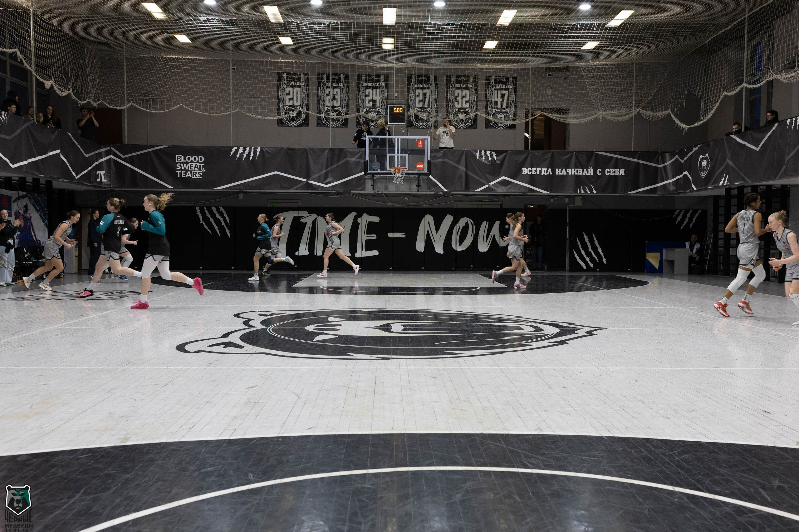

Атмосфера настоящего баскетбола
Спортивный комплекс «Берлога» — это не просто тренировочный зал, а ультрасовременная многофункциональная баскетбольная арена Санкт-Петербургского политехнического университета. Мощный свет, соответствующий регламентам профессиональных лиг, и передовая акустическая система создают незабываемый эффект присутствия.
Трибуны расположены максимально близко к игровой площадке, что позволяет зрителям чувствовать каждое движение игроков, заряжая команду колоссальной энергией. Именно здесь «Черные Медведи» проводят свои самые принципиальные домашние матчи.
Инфраструктура
4 комфортабельные раздевалки, восстановительный центр с сауной, современный тренажерный зал для силовой подготовки и зона прессы.
Места для болельщиков
Большое количество мест для болельщиков как на первом,так и на втором этаже, что позволяет следить за игрой, не упуская ни одного важного момента.
Ждем вас на трибунах!
Приходите поддержать команду и прочувствовать ярость «Берлоги» вживую. Вход на все студенческие матчи для студентов и сотрудников Политеха свободный по пропускам.